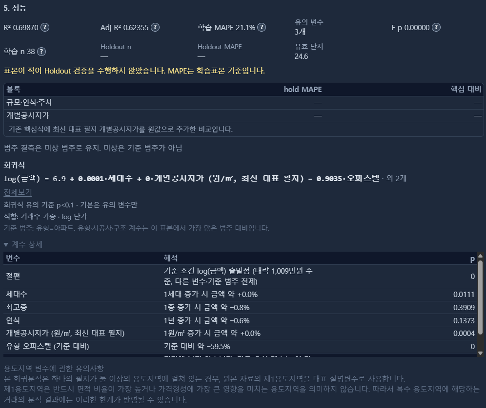
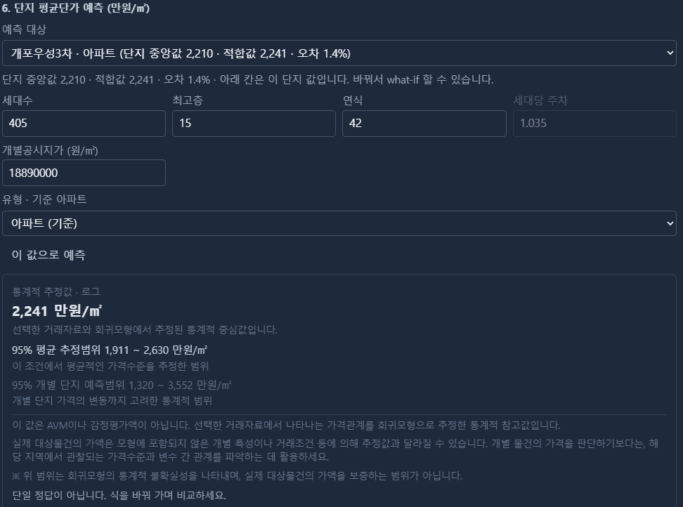

서두 · 학습목표
회귀식이 자료에 잘 맞으면 그 결과도 믿을 수 있을까요?
회귀분석을 실행하면 회귀계수, 결정계수(R²), p값, 신뢰구간 등 여러 통계량이 나타납니다.
그런데 이러한 숫자는 모두 같은 질문에 답할까요?
그렇지 않습니다.
예를 들어 R²는 회귀식이 표본자료의 변동을 얼마나 잘 나타내는지 알려줍니다. 회귀계수의 신뢰구간은 모집단의 계수를 추정할 때 얼마나 불확실한지 보여줍니다.
그리고 새로운 거래 한 건의 가격을 예측하려면 회귀계수의 불확실성뿐 아니라 개별 거래 자체의 변동도 고려해야 합니다.
모형이 자료에 잘 맞는다는 것과 추정 결과가 정확하다는 것, 새로운 거래를 잘 예측한다는 것은 서로 다른 문제입니다.
이번 장에서는 이 차이를 구별하고 회귀분석 결과를 종합적으로 읽는 방법을 알아보겠습니다.
이번 장의 학습목표
- 결정계수 R²와 수정 결정계수의 차이를 이해합니다.
- R²와 원래 단위의 잔차 크기를 함께 해석합니다.
- 회귀계수의 표준오차, 신뢰구간, t검정을 이해합니다.
- 개별 계수의 t검정과 회귀모형 전체의 F검정을 구분합니다.
- 평균 반응의 신뢰구간과 개별 관측의 예측구간을 비교합니다.
- 표본수와 설명변수의 위치가 구간 폭에 미치는 영향을 알아봅니다.
- 표본 내 적합도와 새로운 자료의 예측 성능을 구별합니다.
공통 학습 자료 30건 · 제곱합·계수 검정·구간 계산 자료. 실제 거래 출처·대표성과 고전적 가정이 검증된 자료는 아닙니다.
결정계수 R²
평균만 사용했을 때보다 제곱오차를 얼마나 줄였을까요?
회귀분석 결과에서 가장 자주 확인하는 숫자 중 하나가 결정계수(R²)입니다.
결정계수는 회귀식이 표본자료의 변동을 얼마나 잘 나타내는지 요약합니다.
이를 이해하기 위해 먼저 회귀식을 사용하지 않는 경우를 생각해 보겠습니다.
거래자료 30건의 단가를 설명해야 하는데 면적 등 어떤 설명변수도 사용하지 않는다고 가정합니다.
이때 모든 거래에 대해 하나의 값을 사용해야 한다면, 제곱오차를 가장 작게 만드는 값은 표본평균입니다.
이번 공통 학습 자료의 평균 거래단가는 약 146.33만원/㎡입니다.
이번에는 면적을 설명변수로 사용하는 회귀식을 적용해 보겠습니다.
ŷ = 232.5090 − 0.6843 × 면적
각 거래의 면적에 따라 적합 단가가 달라집니다.
이 회귀식이 평균만 사용하는 방법보다 제곱오차를 얼마나 줄였는지 계산한 지표가 R²입니다.
절편을 포함한 일반적인 최소제곱회귀에서는 다음과 같이 계산합니다.
R² = 1−SSE/SST
여기서 SSE와 SST는 다음을 나타냅니다.
- SSE: 실제값과 회귀식의 적합값 사이의 차이를 제곱해 더한 값
- SST: 실제값과 표본평균 사이의 차이를 제곱해 더한 값
공통 학습 자료 30건의 결과는 다음과 같습니다.
R² ≈ 0.4213
즉, 이번 회귀식은 같은 표본에서 평균만 사용하는 기준보다 제곱오차를 약 42.1% 줄였습니다.
절편을 포함한 최소제곱회귀에서는 전체 제곱합을 두 부분으로 분해할 수 있습니다.
SST = SSR+SSE
SSR은 적합값이 전체 평균에서 벗어난 차이의 제곱합입니다.
이번 예제에서는 전체 제곱변동의 약 42.1%가 SSR, 나머지 약 57.9%가 SSE에 해당합니다.
하지만 R²가 0.421이라는 사실이 거래의 42.1%를 정확하게 맞혔다는 뜻은 아닙니다.
또한 면적이 거래가격의 42.1%를 인과적으로 결정한다거나, 미래 거래를 42.1%의 정확도로 예측한다는 뜻도 아닙니다.
R²는 특정 자료와 모형에 대한 표본 내 적합도입니다.
R²는 언제나 0과 1 사이일까요?
절편을 포함해 같은 자료에 최소제곱법을 적용하고 종속변수에 변동이 있다면 표본 내 R²는 0에서 1 사이입니다.
그러나 절편이 없는 회귀모형이나 별도의 검증자료에서 계산한 R²는 이 범위에 제한되지 않을 수 있습니다.
특히 검증 R²가 음수라면 해당 검증자료에서 사용한 기준값보다 모형의 제곱오차가 더 크다는 의미일 수 있습니다.
따라서 R²를 해석할 때는 계산 대상 자료와 비교 기준을 함께 확인해야 합니다.
수정 결정계수
변수를 추가했다고 반드시 더 좋은 모형이 되는 것은 아닙니다
19장에서는 설명변수를 추가하면 표본 내 R²가 높아질 수 있다는 사실을 배웠습니다.
같은 표본과 종속변수를 사용하는 절편 포함 중첩 OLS에서는 설명변수를 추가해도 잔차제곱합이 증가하지 않습니다.
따라서 R² 역시 감소하지 않습니다.
그런데 변수를 계속 추가하면 실제로 도움이 되지 않는 변수까지 포함될 수 있습니다.
이를 고려하는 지표 중 하나가 수정 결정계수(Adjusted R²)입니다.
수정 결정계수는 표본수와 추정하는 모수의 개수를 고려합니다.
수정 R² = 1−[SSE/(n−p)]/[SST/(n−1)]
여기서 n은 표본수이고, p는 절편을 포함한 추정 모수의 개수입니다.
공통 학습 자료에서 면적만 사용하는 단순회귀는 다음과 같습니다.
- 표본수 n = 30
- 추정 모수 수 p = 2
- 잔차 자유도 n−p = 28
- R² ≈ 0.4213
- 수정 R² ≈ 0.4007
수정 R²는 설명변수를 추가하면서 발생하는 자유도 손실을 반영합니다.
따라서 R²와 달리 변수를 추가했을 때 낮아질 수도 있습니다.
하지만 수정 R²가 높다고 해서 새로운 거래에서 예측 성능이 좋다는 보장은 없습니다.
또한 종속변수가 거래단가인 모형과 로그 거래단가인 모형처럼 결과의 척도가 서로 다른 경우에는 R²나 수정 R²의 숫자만으로 우열을 판단하기 어렵습니다.
수정 R²는 모형의 복잡도를 고려한 표본 내 지표이지, 외부 검증을 대체하는 지표는 아닙니다.
원래 단위의 잔차 크기
R²가 높더라도 실제 오차는 클 수 있습니다
결정계수는 단위가 없습니다.
따라서 R²만 보면 실제 거래단가와 적합값이 얼마나 차이 나는지 알기 어렵습니다.
이때 18장에서 배운 잔차 지표를 함께 사용할 수 있습니다.
공통 학습 자료의 계산 결과는 다음과 같습니다.
| 지표 | 값 |
|---|---|
| R² | 0.4213 |
| 학습 MAE | 38.16만원/㎡ |
| 학습 RMSE | 60.98만원/㎡ |
| 잔차 표준오차 RSE | 63.12만원/㎡ |
MAE는 잔차 절댓값의 평균입니다.
RMSE는 잔차제곱합을 표본수로 나눈 뒤 제곱근을 취합니다.
RSE는 잔차제곱합을 잔차 자유도로 나누어 계산합니다.
RMSE = √(SSE/n)
RSE = √(SSE/(n−p))
이번 예제에서 RMSE와 RSE가 서로 다른 이유는 분모가 다르기 때문입니다.
또한 RMSE는 큰 잔차에 더 민감하므로 일부 극단적인 관측값이 전체 결과에 큰 영향을 줄 수 있습니다.
R²가 비슷하더라도 원래 단위의 오차가 같다는 뜻은 아닙니다.
가격대와 거래단가의 흩어짐이 서로 다른 시장에서는 같은 R²라도 실제 오차의 크기가 크게 다를 수 있습니다.
따라서 회귀모형을 비교할 때는 R²와 함께 종속변수의 단위, 표본의 특성, 실제 잔차의 크기를 살펴봐야 합니다.
다만 여기서 계산한 MAE와 RMSE는 회귀식을 적합한 바로 그 30건에 대한 학습 오차입니다.
새로운 거래에서의 오차와는 구별해야 합니다.
MAPE는 R²보다 더 좋은 지표일까요?
MAPE는 평균 절대 백분율 오차입니다.
실제값 대비 상대적인 오차를 백분율로 나타내므로 서로 다른 가격 규모의 자료를 비교할 때 유용할 수 있습니다.
하지만 실제값이 0이면 계산할 수 없고, 0에 가까우면 매우 불안정해질 수 있습니다.
또한 작은 실제값에 상대적으로 큰 비중이 부여될 수 있습니다.
따라서 R²와 MAPE는 서로 대체할 수 있는 지표가 아닙니다.
모형을 설명하려는지, 새로운 관측값을 예측하려는지에 따라 필요한 지표가 달라집니다.
회귀계수의 불확실성
계산된 기울기는 모집단의 기울기와 얼마나 다를 수 있을까요?
17장에서 면적과 거래단가의 단순회귀식을 계산했습니다.
기울기는 약 −0.6843이었습니다.
그런데 다른 거래 30건을 추출한다면 기울기가 정확히 같을까요?
그렇지 않을 수 있습니다.
표본이 달라지면 회귀계수도 달라질 수 있기 때문입니다.
이러한 추정의 불확실성을 나타내는 지표가 회귀계수의 표준오차(Standard Error)입니다.
단순회귀에서 기울기의 고전적 표준오차는 다음과 같이 계산합니다.
SE(b₁) = s/√Sxx
여기서 s는 잔차 표준오차이고, Sxx는 면적이 평균을 중심으로 얼마나 퍼져 있는지를 나타내는 제곱합입니다.
이번 예제의 계산 결과는 다음과 같습니다.
| 항목 | 결과 |
|---|---|
| 기울기 b₁ | −0.6843 |
| 기울기의 표준오차 | 0.1516 |
| 95% 신뢰구간 | −0.9947 ~ −0.3739 |
신뢰구간의 양 끝은 모두 음수입니다.
고전적인 회귀모형의 가정 아래에서는 모집단 기울기가 음수라는 통계적 근거가 나타난 것입니다.
하지만 이는 면적이 증가하면 거래단가가 실제로 하락한다는 인과관계를 증명하는 결과가 아닙니다.
또한 이 신뢰구간은 모집단의 기울기를 추정하기 위한 구간이지 개별 거래가격의 예측구간이 아닙니다.
신뢰수준 95%는 같은 추정 절차를 반복했을 때 계산된 구간이 고정된 모집단 계수를 포함하는 장기적 비율로 이해해야 합니다.
이번 계산에는 올바른 선형 평균 관계와 적절한 독립성·등분산성·정규오차 등 고전적 추론의 가정이 사용됩니다.
공통 학습 자료가 실제로 이러한 가정을 모두 충족한다고 검증된 것은 아닙니다.
t검정과 F검정
개별 회귀계수와 모형 전체는 서로 다른 질문입니다
회귀분석에서는 개별 계수가 0인지 검정할 수 있습니다.
이번 단순회귀에서 기울기에 대한 귀무가설은 다음과 같습니다.
H₀: β₁=0
이는 모집단에서 면적과 거래단가 사이의 선형 기울기가 0이라는 가설입니다.
검정통계량은 추정계수를 표준오차로 나누어 계산합니다.
t = b₁/SE(b₁)
이번 예제의 결과는 다음과 같습니다.
- t ≈ −4.515
- 자유도 = 28
- 양측 p값 ≈ 0.00010
고전적 검정 가정 아래에서 이 정도로 극단적인 t값은 귀무가설이 맞을 때 드물게 나타납니다.
따라서 유의수준 5%에서는 기울기가 0이라는 귀무가설을 기각합니다.
이번에는 회귀모형 전체의 F검정을 생각해 보겠습니다.
전체 F검정은 설명변수들이 함께 회귀모형에 기여하는지 살펴보는 검정입니다.
설명변수가 하나뿐인 절편 포함 단순회귀에서는 다음 관계가 성립합니다.
F = t²
이번 계산 결과는 다음과 같습니다.
F(1,28) ≈ 20.388
이 값은 기울기에 대한 t값을 제곱한 값과 같습니다.
따라서 두 검정은 같은 귀무가설에 대해 동일한 p값을 제공합니다.
하지만 설명변수가 여러 개인 다중회귀에서는 차이가 있습니다.
개별 t검정은 다른 포함 변수들을 조건으로 특정 계수 하나가 0인지 살펴봅니다.
전체 F검정은 절편을 제외한 모든 기울기 계수가 동시에 0인지 검정합니다.
따라서 개별 변수 중 일부가 유의하지 않더라도 설명변수들의 공동 검정은 유의할 수 있습니다.
반대로 전체 F검정의 p값이 작다고 해서 모든 개별 계수가 유의하다는 뜻도 아닙니다.
통계적 유의성, 관계의 크기, 모형의 예측 성능은 서로 다른 질문에 답합니다.
평균의 신뢰구간과 개별 예측구간
같은 회귀식에서 계산해도 두 구간의 폭은 다릅니다
회귀식을 이용해 면적이 100㎡인 토지의 단가를 계산한다고 가정해 보겠습니다.
회귀식의 적합값은 약 164.08만원/㎡입니다.
그런데 무엇을 추정하려는지에 따라 필요한 구간이 달라집니다.
① 평균 반응의 신뢰구간
면적이 100㎡인 거래들의 모집단 평균 단가가 어디에 있는지 추정합니다.
② 개별 관측의 예측구간
면적이 100㎡인 새로운 거래 한 건의 단가가 어느 범위에 놓일 수 있는지 예측합니다.
두 경우의 중심 적합값은 같습니다.
하지만 개별 거래에는 모집단 평균에 대한 추정오차뿐 아니라 거래마다 발생하는 자체적인 변동도 존재합니다.
따라서 같은 신뢰수준에서 개별 예측구간은 평균 반응의 신뢰구간보다 넓습니다.
선택 면적 100.00㎡ · 청록 점선
회귀선 가까이에 있는 좁은 구간은 평균 반응의 불확실성을 나타냅니다.
바깥쪽의 넓은 구간은 개별 관측값의 변동까지 고려한 예측구간입니다.
이 차이는 수식에서도 확인할 수 있습니다.
먼저 면적 x₀의 레버리지 성격을 나타내는 값을 다음과 같이 계산합니다.
h₀ = 1/n+(x₀−x̄)²/Sxx
그러면 고전적인 단순선형회귀에서 다음과 같이 구간을 계산합니다.
평균 반응의 95% 신뢰구간
ŷ₀ ± t₀.₉₇₅,ₙ₋₂ s√h₀
개별 관측의 95% 예측구간
ŷ₀ ± t₀.₉₇₅,ₙ₋₂ s√(1+h₀)
두 식의 차이는 제곱근 안의 1입니다.
이 1은 새로운 관측값 자체의 오차 변동을 반영합니다.
따라서 표본이 많아져 평균 추정이 정밀해지더라도 개별 거래 자체의 불확실성까지 사라지는 것은 아닙니다.
이 구간들은 선택한 모형과 고전적인 오차분포 가정에 근거합니다.
실제 시장에서 모든 거래가 반드시 이 구간 안에 들어간다는 보장은 아닙니다.
그림 전체가 95% 신뢰구간이라는 뜻일까요?
그림에서 각 면적에 계산된 95% 신뢰구간은 일반적으로 해당 면적에서의 점별 신뢰구간입니다.
여러 면적에서 계산한 점별 구간들을 연결했다고 해서 회귀곡선 전체를 동시에 95% 수준으로 포함하는 구간이 되는 것은 아닙니다.
회귀곡선 전체에 대한 동시 추론이 필요하다면 동시 신뢰대역 등 별도의 방법을 사용해야 합니다.
새 관측의 오차가 학습 자료와 독립이고, 올바른 선형 평균·등분산 정규오차 등 고전적 가정이 적절해야 합니다. 그림은 면적 22~310㎡의 점별 구간입니다.
100㎡ 예제
동일한 적합값에서 불확실성의 대상이 달라집니다
공통 학습 자료 30건에서 면적 100㎡에 대한 구간을 실제로 계산해 보겠습니다.
적합 단가: 164.08만원/㎡
고전적인 95% 구간은 다음과 같습니다.
| 추정 대상 | 95% 구간 |
|---|---|
| 평균 반응의 신뢰구간 | 139.14 ~ 189.02만원/㎡ |
| 개별 거래의 예측구간 | 32.41 ~ 295.75만원/㎡ |
학습 자료 30건과 회귀계수는 고정합니다. 면적 22~310㎡에서 그림 2의 선택선, 그림 3의 구간과 그림 4의 선택선이 함께 바뀝니다.
기본값 100㎡에서 두 구간의 중심은 모두 164.08만원/㎡입니다. 위 조절기로 면적을 바꾸면 선택 면적의 적합값과 구간을 확인할 수 있습니다.
하지만 평균 반응의 신뢰구간은 상대적으로 좁고, 개별 거래의 예측구간은 훨씬 넓습니다.
이는 면적이 100㎡라는 사실을 알고 있더라도 위치와 용도지역, 거래 조건 등 모형에 포함되지 않은 차이가 개별 거래의 변동으로 남아 있기 때문일 수 있습니다.
이번 결과는 특히 한 가지 사실을 보여줍니다.
면적 하나로 계산한 회귀식이 평균적인 관계를 나타내는 데에는 도움이 되더라도, 새로운 거래 한 건의 가격을 좁은 범위로 예측하기는 어려울 수 있습니다.
또한 표본의 극단적인 관측값이나 부적절한 오차분포 가정이 구간 폭에 영향을 줄 수 있습니다.
따라서 이번 예측구간을 개별 토지의 적정가격 범위나 감정평가상의 가격 범위로 해석해서는 안 됩니다.
95%라는 숫자는 무엇을 의미하나요?
평균 반응의 신뢰구간은 모집단에서 정해진 X에 대응하는 평균값을 추정하는 절차입니다.
고전적 가정이 적절하다면 같은 방식으로 표본추출과 구간 계산을 반복했을 때 약 95%의 구간이 고정된 평균값을 포함합니다.
개별 예측구간은 새롭게 관측되는 값 자체도 변한다는 점에서 반복적인 새 관측의 포함률을 대상으로 합니다.
따라서 두 구간은 모두 95%라는 숫자를 사용하더라도 추정하는 대상이 다릅니다.
구간의 폭을 결정하는 요인
평균에서 멀리 떨어진 면적일수록 추정의 불확실성이 커질 수 있습니다
회귀분석에서 구간의 폭은 모든 X에서 같을까요?
그렇지 않습니다.
고전적인 단순선형회귀에서 평균 반응의 신뢰구간은 설명변수의 표본평균 근처에서 가장 좁아집니다.
그 이유는 다음 식에 있습니다.
h₀ = 1/n+(x₀−x̄)²/Sxx
x₀가 표본평균 x̄와 같으면 두 번째 항이 0이 됩니다.
반대로 표본평균에서 멀어질수록 두 번째 항이 커집니다.
따라서 다른 조건이 같다면 평균에서 먼 X에서 신뢰구간이 넓어집니다.
그래프의 가로축은 면적이고 세로축은 구간 중심에서 상한 또는 하한까지의 거리인 반폭(Half-width)입니다.
같은 신뢰수준에서 개별 예측구간의 반폭은 평균 신뢰구간보다 큽니다.
또한 구간 폭에는 다음 조건도 영향을 줍니다.
- 잔차의 흩어짐이 클수록 구간은 넓어집니다.
- 신뢰수준을 높이면 구간은 넓어집니다.
- 표본수가 증가하고 다른 조건이 비슷하다면 평균 추정은 더 정밀해질 수 있습니다.
- 설명변수의 관측 범위와 분포도 구간 폭에 영향을 줍니다.
중요한 점은 개별 예측구간의 폭이 표본수 증가만으로 계속 0에 가까워지는 것은 아니라는 사실입니다.
새로운 거래 자체의 오차 변동이 남기 때문입니다.
또한 수식에 면적을 대입할 수 있다고 해서 모든 면적에서 계산된 구간이 현실적으로 적절한 것은 아닙니다.
관측 범위 밖에서는 함수 형태가 유지된다는 보장이 없으며, 누락변수나 시장 구조 변화 등은 고전적인 구간 공식에 충분히 반영되지 않을 수 있습니다.
공통 자료의 평균 면적은 125.9333…㎡입니다. 회색 점선은 이 위치를, 청록 점선은 선택한 면적을 나타냅니다.
음수 하한과 모형의 한계
수학적으로 계산된 구간이 현실적으로 타당한 구간은 아닐 수 있습니다
회귀식의 신뢰구간이나 예측구간을 계산하면 때때로 현실적으로 불가능한 값이 나타날 수 있습니다.
예를 들어 거래단가의 예측구간 하한이 음수로 계산될 수 있습니다.
하지만 토지 거래단가가 음수라는 뜻은 아닙니다.
이는 해당 회귀모형에서 가정한 오차 구조와 분포가 실제 가격자료의 특성과 충분히 맞지 않을 수 있다는 신호입니다.
이런 경우에는 다음 사항을 검토할 수 있습니다.
- 종속변수를 로그변환하는 것이 적절한가?
- 가격대에 따라 오차분산이 달라지는가?
- 누락된 변수나 서로 다른 시장 집단이 존재하는가?
- 현재 모형의 적용 범위가 적절한가?
20장에서 배운 로그모형은 양수의 결과변수를 표현하는 데 유용할 수 있습니다.
하지만 로그모형도 원래 단위의 산술평균 복원과 오차분포 등 별도의 문제가 있으므로 무조건 더 우수한 대안이라고 볼 수는 없습니다.
또한 음수 하한을 임의로 0으로 바꾸고 원래의 95% 구간과 동일하게 해석해서는 안 됩니다.
구간의 계산 방식과 포함률이 달라질 수 있기 때문입니다.
비현실적인 구간을 숨기기보다 모형의 한계와 개선 필요성을 확인하는 것이 중요합니다.
좋은 적합도와 신뢰할 만한 추론
R², 신뢰구간, 외부 예측 성능을 구별하세요
지금까지 회귀분석 결과에서 확인할 수 있는 여러 통계량을 살펴봤습니다.
이들을 정리하면 다음과 같습니다.
| 질문 | 주요 지표 |
|---|---|
| 표본자료에 얼마나 잘 맞는가? | R², 수정 R², 학습 잔차 |
| 계수를 얼마나 정확하게 추정했는가? | 표준오차, 계수 신뢰구간 |
| 평균 반응은 어느 범위로 추정되는가? | 평균 반응의 신뢰구간 |
| 새로운 관측값은 어느 범위에 놓일 수 있는가? | 개별 예측구간 |
| 새로운 자료에서도 잘 맞는가? | 검증 MAE·RMSE·R² 등 |
이 다섯 질문은 서로 관련되어 있지만 같은 의미가 아닙니다.
예를 들어 R²가 높은 모형이라도 특정 계수는 다중공선성으로 인해 표준오차가 클 수 있습니다.
또한 개별 계수의 p값이 작더라도 새로운 거래의 예측오차는 클 수 있습니다.
반대로 R²가 상대적으로 낮더라도 연구 목적에 맞는 의미 있는 관계를 추정할 수 있습니다.
따라서 어느 하나의 지표만으로 모형의 합격 여부를 결정하기 어렵습니다.
특히 변수 선택이나 로그변환, 다항항 등을 여러 차례 실험한 뒤 가장 좋은 결과를 선택했다면 그 탐색 과정에서 발생하는 불확실성도 고려해야 합니다.
일반적인 신뢰구간과 p값은 선택한 모형을 주어진 것으로 보고 계산하는 경우가 많기 때문입니다.
또한 이분산이나 시간적·공간적 의존성이 있는 경우에는 표준오차와 구간 추정 방식을 적절히 검토해야 합니다.
강건 표준오차를 적용했다고 해서 새로운 거래의 예측구간까지 자동으로 타당해지는 것은 아닙니다.
회귀모형의 적합도, 계수에 대한 추론, 개별 관측의 예측은 서로 구분해 검증해야 합니다.
확인 문제
각 통계량이 무엇을 알려주는지 구별해 보세요
- R²=0.42이면 거래의 42%를 정확하게 맞혔다는 뜻일까요?
답과 해설
아닙니다.
절편을 포함한 표본 내 OLS에서 평균만 사용하는 기준보다 제곱오차를 약 42% 줄였다는 뜻입니다.
개별 거래의 정답률이나 인과효과의 크기를 나타내지 않습니다.
- 새로운 거래 한 건을 예측할 때 평균 반응의 신뢰구간을 사용해도 될까요?
답과 해설
적절하지 않습니다.
평균 반응의 신뢰구간에는 새로운 거래 자체의 오차 변동이 포함되지 않습니다.
개별 거래를 예측하려면 목적에 맞는 예측구간이 필요합니다.
- 회귀곡선에 표시된 모든 95% 신뢰구간이 전체 회귀곡선을 동시에 포함한다는 뜻일까요?
답과 해설
아닙니다.
각 면적에서 계산한 점별 신뢰구간과 회귀곡선 전체에 대한 동시 신뢰대역은 다릅니다.
- 회귀계수의 p값이 매우 작으면 미래 거래를 정확하게 예측할 수 있을까요?
답과 해설
보장할 수 없습니다.
계수에 관한 통계적 추론과 새로운 자료에 대한 예측 성능은 서로 다른 질문입니다.
CH2 Macro에서 읽기
실제 집합 지역회귀에서 학습 성능과 두 종류의 구간을 구별하세요
아래 두 화면은 집합 주거 지역회귀 사례입니다. 위쪽은 학습 성능과 계수표, 아래쪽은 선택 단지의 추정값과 구간을 보여줍니다. 공통 학습 자료 30건의 단순회귀와는 자료의 단위·가중치·모형이 다릅니다.

학습 n=38은 거래 38건이 아니라 학습에 사용한 단지 38개입니다. 이 지역회귀의 결과변수는 단지별 중앙 거래단가이며, 화면에는 ‘거래수 가중 · log 단가’가 표시됩니다. ‘유효 단지 24.6’은 현재 구현에서 거래 건수 t에 따른 가중치 w=t/(t+10)의 합입니다. 독립적인 단지가 정확히 24.6개라거나, 이 값을 그대로 잔차 자유도에 넣는다는 뜻은 아닙니다.
학습 MAPE 21.1%는 학습 단지의 가중 절대 백분율 오차입니다. Holdout n과 Holdout MAPE의 ‘—’는 검증 오차가 0이라는 뜻이 아닙니다. 표본이 작아 별도 Holdout을 만들지 않았다는 안내를 함께 읽으세요. 선택 단지의 중앙값과 적합값 차이 1.4%도 외부 예측 성능의 증거로 볼 수 없습니다.
이 화면의 표기에는 확인할 차이가 있습니다. 공통 회귀식 표시 컴포넌트는 ‘log(금액)’이라고 쓰지만, 지역회귀 엔진은 단지 중앙단가의 자연로그를 적합합니다. 따라서 이 사례의 회귀식을 거래총액 모형으로 읽으면 안 됩니다. 또 로그모형의 R²는 로그 척도의 가중 적합도인 반면, 수정 R²는 스미어링으로 원 단위로 복원한 값의 가중 제곱오차에서 계산됩니다. 표시된 0.69870과 0.62355를 동일 척도의 R²와 수정 R² 한 쌍처럼 해석하지 않습니다.

선택된 개포우성3차 사례의 추정값은 2,241만원/㎡입니다. 평균 95% 추정범위는 1,911~2,630만원/㎡, 개별 단지 95% 예측범위는 1,320~3,552만원/㎡로 표시됩니다. 평균 관계를 추정하는 구간보다 단지 자체의 변동까지 고려하는 예측범위가 넓습니다. 로그 척도에서 역변환한 구간이므로 원래 단위에서는 중심을 기준으로 대칭일 필요가 없습니다.
이 값은 선택 자료와 모형에서 추정한 통계적 참고값입니다. 특정 단지나 개별 호의 감정평가액·적정가격·실제 거래가격의 보장 범위가 아닙니다. 화면 제목의 ‘평균단가 예측’과 구별해, 실제 학습 목표가 단지 중앙단가라는 점도 함께 확인하세요.
실제 지역회귀의 적합·검정·구간 계산 방식
확인한 집합 주거 지역회귀는 단지 한 개를 한 행으로 구성합니다. 선택 지역·기간·유형과 거래 건수 조건을 적용하고, 중앙단가가 양수이며 선택한 수치 속성이 있는 단지를 사용합니다. 범주 결측은 선택한 미상 유지·제외 정책을 따릅니다. 학습 유효 표본과 원래 조회 표본은 다를 수 있습니다.
단지 균등 설정은 OLS, 거래수 가중 설정은 WLS를 사용합니다. 현재 적합 호출은 고전적 기본 공분산을 사용하며, 이 경로에 이분산 강건 또는 군집 보정 옵션은 확인되지 않습니다. 계수별 SE·t·p와 모형 전체 F검정은 적합 결과에서 가져옵니다. 자유도는 설계행렬의 독립 열 수에 따르며 ‘유효 단지’ 가중치 합으로 대체하지 않습니다.
첨부 계수표는 변수·해석·p를 표시합니다. 백엔드에 SE와 t가 있어도 이 표에 계수의 표준오차·95% 신뢰구간을 이미 제공하는 것처럼 설명하지 않습니다. p값은 표에서 최대 소수 넷째 자리, 전체 F의 p값은 다섯째 자리로 반올림되어 0으로 보일 수 있으며, 확률이 정확히 0이라는 뜻은 아닙니다. RSE·MAE는 이 성능 카드에 없고, 백엔드의 원 단위 가중 RMSE도 첨부 카드에는 표시되지 않습니다.
현재 Holdout 분할은 적격 단지가 40개 미만이면 생략합니다. 그 이상이면 고정 난수로 약 25%를 따로 두며 최소 8개를 사용합니다. 이는 별도 단지에 대한 분할이며 미래 연도나 다른 지역의 성능까지 보장하지 않습니다. 모형 후보 탐색 후의 불확실성도 통상적인 계수 검정에 모두 포함되지는 않습니다.
평균 구간과 개별 예측구간은 적합 모형의 get_prediction(...).summary_frame(alpha=0.05)에서 계산합니다. 로그모형은 학습 잔차의 가중 스미어링 계수로 점추정과 평균 구간 양 끝을 보정합니다. 개별 예측구간은 로그 구간 양 끝을 지수변환합니다. 보정계수 자체의 추정 불확실성을 별도로 전파하는 계산은 확인한 경로에 포함되지 않습니다.
WLS 예측 호출에는 새 단지의 별도 가중치를 전달하지 않습니다. 따라서 거래 건수 가중 적합과 새 단지의 오차분산 가정이 어떻게 연결되는지 추가 검토가 필요합니다. 계산된 ‘95%’를 실제 단지 자료에서 검증된 95% 포함률로 받아들이지 마세요. 지역·시점 의존성과 가중치의 통계적 의미도 따로 확인해야 합니다.
이 확인 범위는 첨부한 집합 주거 지역회귀 경로입니다. 거래별 회귀, 비주거 도로명 집계, 복합 회귀 등 다른 모형에도 같은 관측 단위와 구간 계산이 적용된다고 확대하지 않습니다. 이 장에서는 표기·계산의 차이를 설명하며 실제 분석 및 모형추천 코드를 변경하지 않습니다.
결론 · 학습 요약
적합도가 좋은 모형과 불확실성이 작은 모형은 같은 뜻이 아닙니다
회귀모형의 결과를 해석할 때는 무엇을 알고 싶은지 먼저 구분해야 합니다.
R²는 표본 내 적합도를 나타내고, 계수의 신뢰구간은 모집단 회귀계수에 대한 추정의 불확실성을 나타냅니다.
또한 평균 반응의 신뢰구간과 개별 예측구간은 추정 대상이 다르므로 구간 폭에도 차이가 발생합니다.
이번 장에서 기억할 내용
- R²: 평균만 사용하는 기준 대비 회귀식이 줄인 표본 내 제곱오차의 비율입니다.
- 수정 R²: 표본수와 모수의 개수를 반영한 적합도 지표입니다.
- 잔차 크기: R²와 함께 MAE·RMSE·RSE의 단위와 계산 기준을 확인해야 합니다.
- 계수의 불확실성: 표준오차와 신뢰구간은 회귀계수 추정의 불확실성을 나타냅니다.
- t검정과 F검정: 개별 계수의 검정과 전체 모형의 검정은 서로 다른 질문에 답합니다.
- 평균 신뢰구간: 주어진 조건에서 모집단의 평균 반응을 추정합니다.
- 개별 예측구간: 새로운 관측값 자체의 변동까지 고려하므로 일반적으로 더 넓습니다.
- 적용 범위: 계산된 구간은 모형과 통계적 가정에 의존하며 실제 시장의 보장 범위가 아닙니다.
- 외부 검증: 표본 내 적합도가 높아도 새로운 자료의 예측 성능은 별도로 검증해야 합니다.
다음 22장 「통계적 설명과 예측, 지도학습과 비지도학습」에서는 분석의 목적에 따라 모형을 구성하고 평가하는 방법이 어떻게 달라지는지 알아보겠습니다.
참고자료와 계산값
참고자료의 기존 확인일: 2026-10-09. 계산은 공통 학습 자료 30건의 면적(㎡)과 거래단가(만원/㎡)에 고전적 단순 OLS 가정을 적용한 예제입니다.